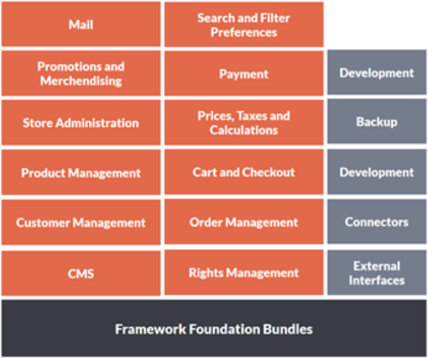
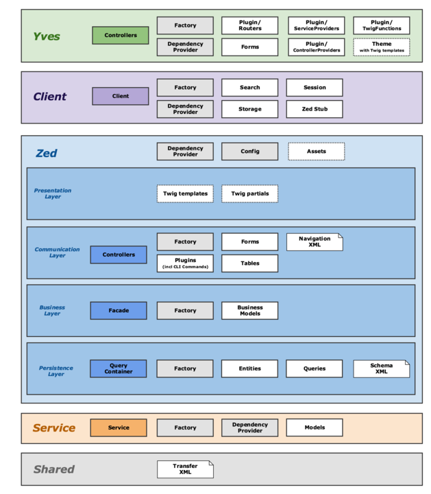

About Spryker
New/Draft
The Spryker Commerce Framework is a PHP based framework for creating sophisticated e-commerce web platforms.
This extendable framework is used build business-driven web applications such B2C shops, marketplaces, shopping clubs, B2B platforms and more.
Clear growth paths and modularity are the backbones of the Framework’s design and are reflected accordingly in the Framework’s architecture. Each piece of code that represents a granular functionality is published as an entity called a module. A collection of modules together build functionality. Each modulehas its own release cycle therefore only when that specific functionality is changed will a newer version be released and in most cases, it will be released as a minor BC release.
With a module based environment you can achieve a high level of modularity by allowing you as a developer to focus entirely on the essential module that you need to set-up your first environment. Then, once you are setup you can grow your functionality piece by piece allowing you to learn and adapt the Framework to your needs as you go. With our continuous release cycle, you can decide what modules to take and when you want to update versions.
Our continuous release environment minimalizes the frequency of major releases and we only release them when there is a BC (backwards compatibility) issue. In addition, when we release a major version it will come with an estimate that defines the time to implementation which could be a few hours for simple changes and a few days when new functionality is released. In this way, we ensure you have as much information as possible to plan when the best time will be for you to upgrade your module.
Another advantage of the module approach is that the entire platform never increments in version only parts of it do, so you can automatically see if a new version is or is not part of your implementation. This way you can focus on making changes only when it is relevant to your environment.
Module Types and Functionality
The Spryker Framework functionality can be divided into four distinct categories; Framework Foundation modules, Functionality modules, Development modules and External Interface modules.
The following diagram visualizes the Framework Categories:

source Image: C:\Users\Deborah Bennun\Documents\Spryker\Documentation\Bundle Distribution.pptx
Each category is a collection of modules, some are unique to the category but most are shared between several categories.
The Framework Foundation modules are the essential modules without which there will be no OS. These modules provide the underlining tools, language and communication layers needed to build a scalable and extendable foundation for your project.
The Functionality modules are implemented as a collection of modules where each module represents a different facet of the feature’s functionality.
- Product Management
- Customer Management
- CMS
- Checkout
- Order Management
- Rights Management
The rest of the modules are used for the following actions:
- Development
- Connectors: To reduce the amount of dependencies in the Framework, connector modules are used to create connections between the different functionalities.
- External interfaces – These modules hold the code needed to set up connectivity to external services and interfaces.
This is a simplification of the module structure for introduction purposes and naturally there are dependencies in between the modules themselves to establish inter-connectivity.

Image source: https://academy.spryker.com/display/CORE/Architecture+convention+overview